Create Ratatouille
附属模组
本模组是机械动力的一个附属，旨在为农业种植…
这是什么
本模组是机械动力的一个附属，旨在为农业种植、食品加工添加更多便利机器方块与物品拓展。同时也是同名整合包专用的模组。
命名空间：
ratatouille 1.20.1 版本：本页物品与配方直接取自该版本的 jar。全部物品55
沼气ratatouille:bio_gas
没有工作台/机器配方
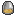
沼气桶ratatouille:bio_gas_bucket
没有工作台/机器配方
沸石ratatouille:boil_stone
蛋糕糊桶ratatouille:cake_batter_bucket
没有工作台/机器配方
烤好的蛋糕模ratatouille:cake_mold_baked
盛满的蛋糕模具ratatouille:cake_mold_filled
没有工作台/机器配方
厨师帽ratatouille:chef_hat
巧克力模具ratatouille:chocolate_mold
盛满的巧克力模具ratatouille:chocolate_mold_filled
没有工作台/机器配方
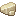
可可脂ratatouille:cocoa_butter
没有工作台/机器配方
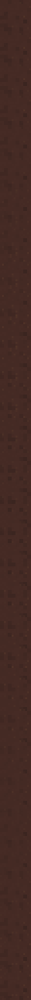
可可原浆ratatouille:cocoa_liquor
没有工作台/机器配方
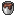
可可原浆桶ratatouille:cocoa_liquor_bucket
没有工作台/机器配方
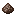
可可粉ratatouille:cocoa_powder
没有工作台/机器配方
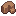
可可固形物ratatouille:cocoa_solids
没有工作台/机器配方
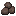
堆肥渣ratatouille:compost_residue
没有工作台/机器配方
堆肥渣液ratatouille:compost_residue_fluid
没有工作台/机器配方
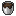
堆肥渣液桶ratatouille:compost_residue_fluid_bucket
没有工作台/机器配方
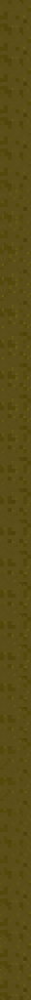
堆肥茶ratatouille:compost_tea
没有工作台/机器配方
堆肥茶桶ratatouille:compost_tea_bucket
没有工作台/机器配方
堆肥塔ratatouille:compost_tower
蛋壳ratatouille:egg_shell
没有工作台/机器配方
蛋黄桶ratatouille:egg_yolk_bucket
没有工作台/机器配方
成熟素ratatouille:mature_matter
没有工作台/机器配方
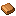
成熟素叠ratatouille:mature_matter_fold
没有工作台/机器配方
西瓜汁桶ratatouille:melon_juice_fluid_bucket
没有工作台/机器配方
盛满的西瓜冰棍模具ratatouille:melon_popsicle_mold_filled
没有工作台/机器配方
肉酱桶ratatouille:mince_meat_bucket
没有工作台/机器配方
冰棍模具ratatouille:popsicle_mold
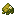
催熟素ratatouille:ripen_matter
没有工作台/机器配方
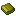
催熟素叠ratatouille:ripen_matter_fold
没有工作台/机器配方
盐ratatouille:salt
没有工作台/机器配方
咸面团ratatouille:salty_dough
没有工作台/机器配方
香肠ratatouille:sausage
肠衣ratatouille:sausage_casing
没有工作台/机器配方
挤压盆ratatouille:squeeze_basin
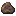
未加工成熟素叠ratatouille:unprocessed_mature_matter_fold
没有工作台/机器配方
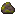
未加工催熟素叠ratatouille:unprocessed_ripen_matter_fold
没有工作台/机器配方